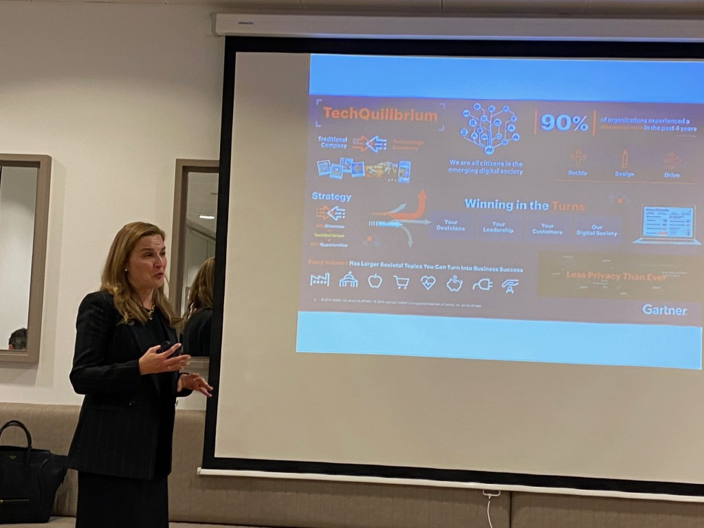

|
Mariola Lobato, socia ejecutiva en Gartner(empresa de investigación de las tecnologías de la información), es Doctora en Ingeniería Química y tiene un Máster en Gestión de Calidad y Organización Industrial. Es una ejecutiva con más de 20 años de experiencia en el entorno de TI, Procesos Digitales y Proyectos de Estrategia Organizacional, especializada en la gestión de proyectos complejos a nivel Internacional, gestionando equipos multiculturales. Mariola se define a sí misma como una mujer con gran capacidad de liderazgo, preocupada por estar siempre informada? de los últimos avances en tecnología y tendencias de futuro, así como en la mejora continua de mi formación y mi desempeño. |
|---|
|  |
Mariola, es Doctora en Ingeniería Química con Máster en Calidad Industrial y Gestión de la Organización E.O.I. En los últimos años, responsable de aspectos clave de la transformación digital: transformación de la calidad de los datos en Data Science y definición de la estrategia de transformación digital para el área de Operaciones Bancarias. |
|---|